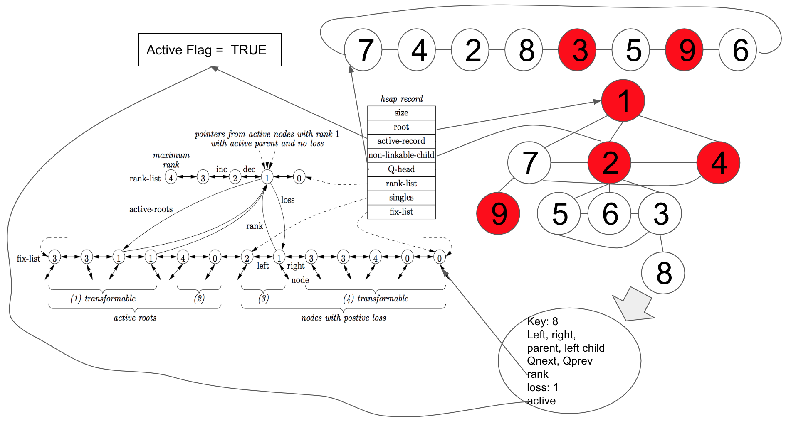
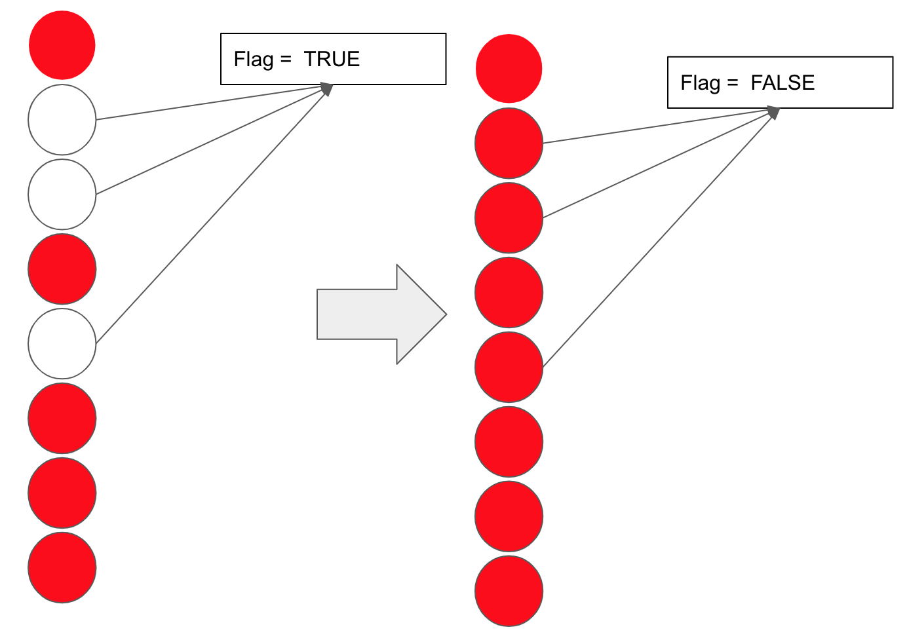

To keep the desired time complexity as described in the Operation section, There are still some details that we need to pay attention to:
When performing an Active Root Reduction, we should be able to find two active roots having the same rank in O(1)
When performing a One or Two Nodes Loss reduction, we should be able to find a node with loss ≥ 2 , or
two nodes with equal rank each with loss = 1 in O(1)
Given all children of a node should be arranged in the order of active, passive non-linkable, and passive linkable, we should be able to add a node to the leftmost, first-passive-position(just for the root when performing decrease key), rightmost in O(1)
When merging, we should be able to make all (active) nodes in the heap passive in O(1)
The design below is one possible structure suggested in the paper by using pointers only(see reference). Note this is not the only possible design, and below is intended to provide a general idea on how the above is possible, not a detail description
Structure In the Paper

Fix-List
This is what makes finding Active Root Reduction and Loss Reduction in O(1) possible. We maintain a Fix-List in which it contains a linked-list of active nodes that could potentially perform the transformations. We divided it into 4 parts.
Part 1 contains all active roots that are ready for active root reductions. All nodes with the same rank are next to each other. This ensures us to find the target nodes to perform the Active Root Reduction immediately
Part 2 contains the rest active roots that are NOT ready for active root reductions. i.e. They are the only active roots with that rank
Part 3 contains all active nodes with positive loss that are NOT ready for the two kinds of loss reduction transformations. i.e. They are the only active nodes with loss 1 for that rank
Part 4 contains all active nodes with positive loss that are ready for the two kinds of loss reduction transformations. All nodes with the same rank are next to each other. This ensures us to find the target nodes to perform the One/Two Nodes Loss Reduction immediately
If we need to perform an Active Root Reduction, we just need to check if part 1 is non-empty. If a reduction is performed, one node becomes an active node with loss 0, so it's removed from this list. And another node's rank is increased by 1, so we just need to go to the Rank-List(described below), and follow the pointer to the correct position in the Fix-List.
If we need to perform a One or Two Nodes Loss Reduction, we just need to check if part 4 is non-empty. If a One Node Loss Reduction is performed, the target node becomes an active root, so it may need to move to part 1 or 2 - by just following the pointer in the Rank-List. If a Two Node Loss Reduction is performed, both nodes become active nodes with loss 0, so they will be removed from the Fix-List, and we need to check if there is one remaining node with the same rank and loss 1 is still in the Fix-List, if so, it should be moved to part 3.
In summary, by maintaining a Fix-List, An Active Root Reduction or Loss Reduction can be found in O(1) time. And after the reduction, some nodes may need to move, but all these can be checked and done in O(1) trivially by following the pointers. Also trivially, because of the structure, nodes for Root Degree Reduction can be found by checking root's last 3 children.
Rank-List
We maintain a Rank-List in which it contains R + 1 nodes(as R is the maximum rank) each representing rank 0, 1, 2, ...R, as a linked list.
The node representing rank r in the Rank-List has a pointer to the first active root with rank r in part 1 or 2 of the Fix-List, and a pointers to the first active node with rank r and positive loss in part 3 or 4 of the Fix-List. As explained above, these two pointers allow the transfer of nodes in the Fix-List O(1)
Node
key: the value
left, right, parent: pointers to the left sibling, right sibling and parent. All siblings form a circular linked-list so that insertion into any place is constant
Qnext, Qprev: pointers to the next and prev nodes in the Q. Also a circular linked-list so that insertion and merging is constant
rank: If the node is passive, it's undefined. If the node is an active root or an active node with positive loss(i.e. it could potentially participate in a transformation), it points to the Fix-List, otherwise, it points to the Rank-List. Update this pointer when transformations or heap operations are performed. For example, if an active node with rank r goes from loss 0 to loss 1, its rank pointer originally pointed to the node with rank r in the Rank-List(since it does not qualify for part 3 or 4 of the Fix-List), but now, it can follow the pointer stored in that node and go to the correct position in the Fix-List
Heap
Every heap maintains its own Rank-List, Fix-List, root, Q, and an active flag, and a pointer to the first passive child of the root(so we can insert a passive non-linkable child to the root in O(1) when decreasing key). When a merge happens, all nodes in the smaller heap becomes passive. so The new Rank-List and Fix-List is just the larger size heap. All active nodes in the same heap pointing to the same TRUE active flag that the heap has. And to make all nodes in a heap passive in O(1), we just need to change the active flag to FALSE. A node is considered to be active if and only if it's pointing to a TRUE active flag. A node is passive if it's pointing to null or a FALSE active flag e.g.
